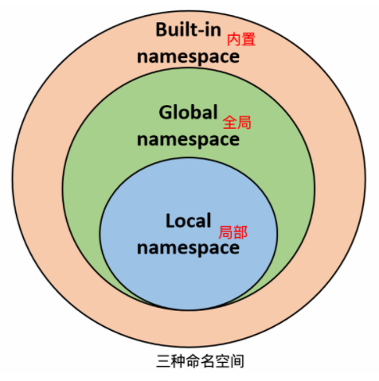

7 从函数到包的Python代码层次¶

代码层次¶
Python是一门脚本语言，新建一个.py文件，写点代码，就可以跑起来了，无论放哪都可以。比如where.py文件：
print("Where am I?")
那么问题来了，这是写在哪里的呢？为了一目了然，我们用“导游图”的视角来看看代码层次：
红色箭头指出了，是写在模块中的，原来一个.py文件就是一个模块。模块中可以写函数和类，模块可以放在包中。
函数¶
Python中最出名的函数一定是print()了，毕竟全世界都在用它say Hello
World。Python函数其实和数学中的函数很像，比如y = f(x)。有函数名字、输入和输出。Python的函数结构如下：
函数通过def关键字来定义：
def 函数名（参数列表）:
函数体
参数列表有就有，无则无，多个参数用逗号分隔。例如：
def hello() :
print("Hello World!")
hello() # 调用函数
def max(a, b):
if a > b:
return a
else:
return b
a = 4
b = 5
print(max(a, b))
调用函数，不需要再加def，直接函数名（参数列表）即可。参数既可以是变量，也可以是其他函数，只要能一一对应。return关键字用来返回值。return不是必需的，如果没有，那么函数会把内部代码全部都执行完再退出，如果有，函数会在return语句立刻退出，同时返回return语句的值，例如：
# 可写函数说明
def sum( arg1, arg2 ):
# 返回2个参数的和."
total = arg1 + arg2
print ("函数内 : ", total)
return total
print("这里不会执行！")
# 调用sum函数
total = sum( 10, 20 )
print ("函数外 : ", total)
类¶
为什么还要写类，函数它不香么？这个问题有点大，我只能简单解释一下，那就是因为，类是包括了函数的，如果有一天你发现函数不够用了，那么可以用类试试，哈哈哈。
类是面向对象编程中的概念，把对象中共性的东西抽离出来而成。
类中的函数叫做方法，除了方法还有属性（也就是变量），我写个不严谨的公式：类 = 属性 + 方法，例如：
class People:
#定义属性
name = ''
age = 0
#定义方法
def speak(self):
print("%s 说: 我 %d 岁。" %(self.name, self.age))
类的使用跟函数一样，需要调用，例如：
dongfanger = People() # 这叫做实例化对象
dongfanger.speak() # 调用方法
类的一大好处是，可以通过继承来进一步复用代码。
模块¶
模块中可以包含模块级代码、函数和类。模块与模块之间是不能直接调用的，必须使用import关键字来导入。导入时，模块级代码一定会被执行，如果我们不想让某些代码执行，那么可以添加一句if __name__ == '__main__':，例如
if __name__ == '__main__':
print('这里的代码，仅在该模块自身运行时执行')
else:
print('模块被导入时执行')
函数和类需要调用才会运行，所以不存在这个问题。
包¶
包是一个目录，特殊的地方在于需要包含一个__init__.py文件（内容可以为空），这是为什么呢？设想一下import hello这条语句，Python从哪去找hello这个包，C盘D盘E盘，成千上万个文件，范围太大了。所以需要把有Python模块的目录标出来，只查找这些目录就可以了。示例：
sound/ 顶层包
__init__.py 初始化 sound 包
formats/ 文件格式转换子包
__init__.py
wavread.py
wavwrite.py
aiffread.py
aiffwrite.py
auread.py
auwrite.py
...
effects/ 声音效果子包
__init__.py
echo.py
surround.py
reverse.py
...
filters/ filters 子包
__init__.py
equalizer.py
vocoder.py
karaoke.py
...
命名空间¶
命名冲突是个头疼的问题，Python提供了命名空间这个方法，把代码块划分为不同的命名空间，同一个命名空间不能重名，不同命名空间可以重名，如图所示：
命名空间一般有三种：

内置：Python内置的名字。
全局：模块中定义的名字，包括模块的函数、类、其他导入的模块、模块级的变量和常量。
局部：函数中定义的名字，包括函数的参数和局部定义的变量。（类中定义的也是）
包里面是文件，文件名重复与否由操作系统判断。
作用域¶
命名空间决定了变量的作用域，小的作用域只在内部才有作用，比如函数内的变量，模块是不能用的：
def func():
a = 1
print(a) # 报错NameError: name 'a' is not defined
反之，大的作用域能作用到小的作用域：
a = 1
def func():
print(a)
func() # a = 1
如果不同作用域有相同名字的变量，Python的匹配顺序为：局部 -> 全局 -> 内置，例如：
a = 1
def func():
a = 2 # 不会作用到模块的a
func() # 调用函数修改a的值
print(a) # a的值仍为1
函数内部的a并不能影响到模块级别的a，因为Python在找a时，函数内部已经找到了，就不会再找了。
可以使用global关键字，把局部变量定义为全局变量，这样模块级别的变量也可以在函数内修改了：
a = 1
def func():
global a # global声明为全局
a = 2
func() # 调用函数修改a的值
print(a) # a的值变为2
另外，Python中只有模块、类和函数，才会产生作用域。其他代码块如if、while、for等是不会产生作用域的，也就是说这些语句内定义的变量，外部也可以访问，例如：
if True:
a = 1
print(a)
小结¶
本文是Python入门系列这道前菜的最后一篇了，正餐Python进阶系列计划在2021年1月开始推送，具体计划我会写在元旦的一篇文章中。Python入门系列并不算完整的教程，它的定位是进阶篇的铺垫，做一些知识储备，降低阅读门槛。如果想学习完整教程，可以找菜鸟教程，也可以上B站看视频（个人更推荐）。最后，为了知识共享和传递，我把入门的7篇文章都导出成pdf上传了，可以在公众号后台回复“入门”下载哦。